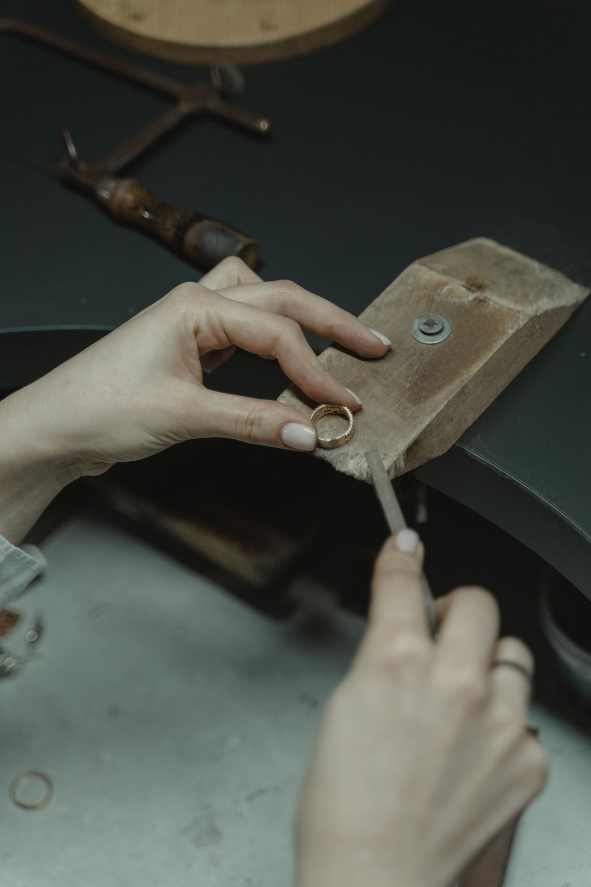
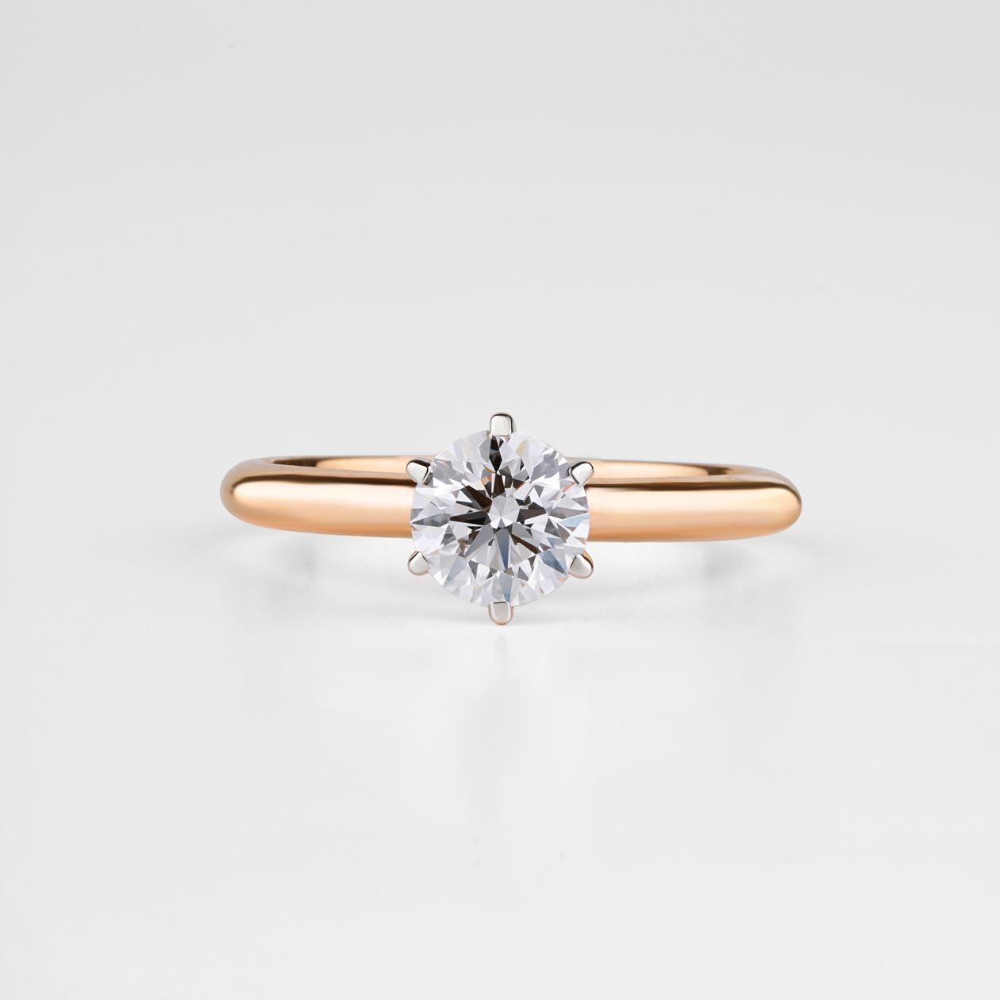
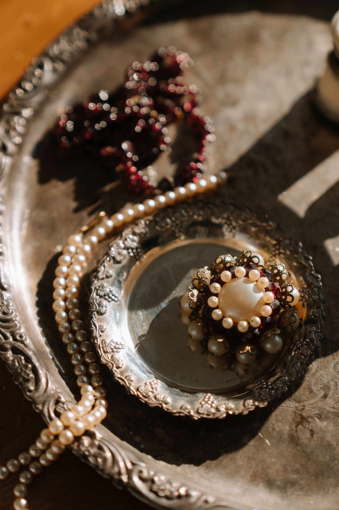
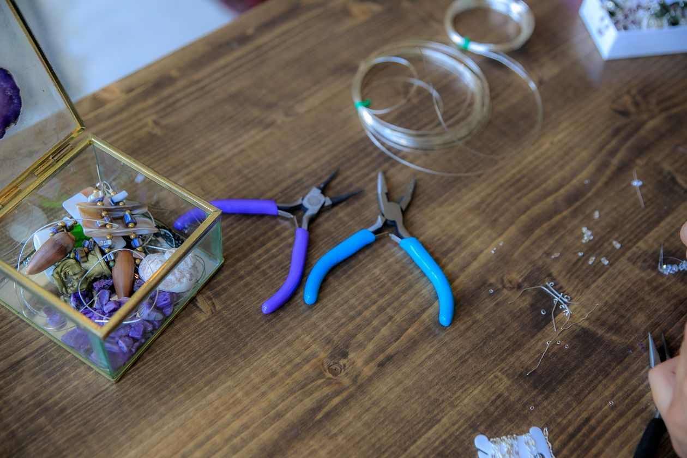
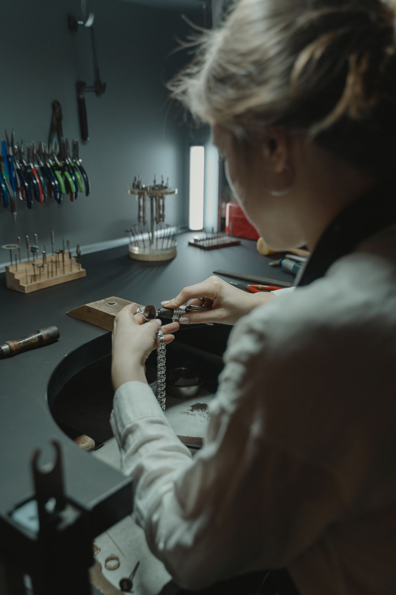

Edward E. Petri Co. Jewelers is a jeweler-manufacturer in the heart of Indianapolis, founded by a master platinum fabricator from Tiffany & Co. in New York. Custom design, estate jewelry, and bench work done the traditional way.
Call the shop
Founder Edward Petri came from Tiffany & Co. in New York as a master platinum fabricator. More than a century later, the shop still works the metal the traditional way.
Edward Petri opens his Indianapolis shop after years as a master platinum fabricator for Tiffany & Co. in New York.
The shop earns the name "Cartier of the Midwest" for its fine platinum work and custom design.
The third owner still works with 1890s-era tools, keeping century-old bench techniques alive.
Every service is done by people who work in platinum and fine metals every day. Call the shop to discuss your piece.
One-of-a-kind pieces designed and fabricated in platinum and fine metals.

Stock photo: a diamond ring.
A curated selection of vintage and estate pieces with a century of taste behind them.

Stock photo: vintage jewelry.
Certified loose diamonds for custom work and special pieces.

Stock photo: jeweler's tools.
Expert bench repair on fine jewelry, done in the shop the traditional way.

Stock photo: a jeweler's atelier.
Professional appraisals from a jeweler with a century of institutional knowledge.
The shop is led by proprietor Charles F. Walker, the current steward of a business that has been making and mending fine jewelry in Indianapolis since 1922.
The third owner still works with 1890s-era tools, carrying forward the bench craft that Edward Petri brought from Tiffany & Co.
Call the shopStock photo: a jeweler's atelier.
Hours: Monday through Friday, 10:00 AM to 4:00 PM
Phone: (317) 636-5007